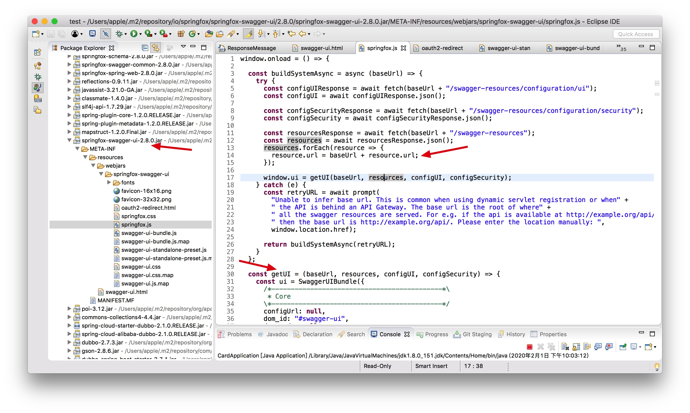
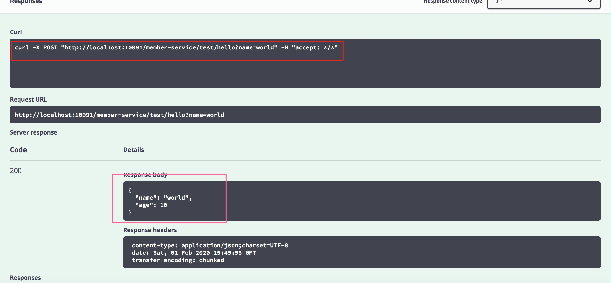

- 00 开篇导读.md
- 01 以真实“商场停车”业务切入——需求分析.md
- 02 具象业务需求再抽象分解——系统设计.md
- 03 第一个 Spring Boot 子服务——会员服务.md
- 04 如何维护接口文档供外部调用——在线接口文档管理.md
- 05 认识 Spring Cloud 与 Spring Cloud Alibaba 项目.md
- 06 服务多不易管理如何破——服务注册与发现.md
- 07 如何调用本业务模块外的服务——服务调用.md
- 08 服务响应慢或服务不可用怎么办——快速失败与服务降级.md
- 09 热更新一样更新服务的参数配置——分布式配置中心.md
- 10 如何高效读取计费规则等热数据——分布式缓存.md
- 11 多实例下的定时任务如何避免重复执行——分布式定时任务.md
- 12 同一套服务如何应对不同终端的需求——服务适配.md
- 13 采用消息驱动方式处理扣费通知——集成消息中间件.md
- 14 Spring Cloud 与 Dubbo 冲突吗——强强联合.md
- 15 破解服务中共性问题的繁琐处理方式——接入 API 网关.md
- 16 服务压力大系统响应慢如何破——网关流量控制.md
- 17 集成网关后怎么做安全验证——统一鉴权.md
- 18 多模块下的接口 API 如何统一管理——聚合 API.md
- 19 数据分库后如何确保数据完整性——分布式事务.md
- 20 优惠券如何避免超兑——引入分布式锁.md
- 21 如何查看各服务的健康状况——系统应用监控.md
- 22 如何确定一次完整的请求过程——服务链路跟踪.md
- 23 结束语.md
18 多模块下的接口 API 如何统一管理——聚合 API
在《第一个 Spring Boot 子服务——会员服务》章节中已经实现了集成 Swagger2，通过 UI 进行接口的展现、测试功能，当单体项目或者对外只提供一个 API 接口文档时，采用 Swagger 的方式访问 API 还算简单，但当微服务项目增多，外部端接入 API 时，就要面对众多的 Swagger 界面——服务端口、接口路径各异，调用难度增大不少，这时迫切需要做一个整合，将所有 API 展现在一个页面中统一对外。
两种实现思路
因之前的每个子模块中都已经集成了 Swagger，可以通过指定的路径访问到各自的 API，有两种方式可以将所有的 API 管理起来。
\1. 自行制作单页，将子模块的 swagger-ui 页面全部装进去，页面中通过 iframe 的形式访问接口。此方式简单粗暴，弊端也显而易见：
- 子模块接口暴露在外，易引起安全风险，需要网关统一处理的功能，如鉴权等，在子模块中缺失。
- 不经网关，访问每个子模块的端口不一，编码易出错。
- 如果模块有变动，单页需要保持更新。
\2. 将各模块的 swagger-ui 集成在网关层，上述三个弊端均不是问题。
本实例中将通过 Gateway 服务层集成所有 swagger-ui 页面，统一对外暴露。
Gateway 层集成 Swagger
首先我们来看看访问 swagger-ui.html 时，都加载了哪些内容。以积分服务为例，如果使用的是 chrome 浏览器，右键打开“检查”功能，切换到 network 页签，刷新页面后，按“Type”列排序，默认调用 4 个异步方法：
http://localhost:10061/swagger-resources/configuration/ui
http://localhost:10061/swagger-resources/configuration/security
http://localhost:10061/swagger-resources
http://localhost:10061/v2/api-docs

还有关键的 springfox.js 文件，如上图所示，界面中显示的数据最终数据源是 /v2/api-docs 方法获取到的，是由 swagger-resources 方法请求后再二次调用。swagger-resources 的请求响应结果为：
[{"name":"default","url":"/v2/api-docs","swaggerVersion":"2.0","location":"/v2/api-docs"}]
在 UI 初始化过程中，加载 URL 地址 /v2/api-docs，获取所有接口配置数据。如下所示，把数据格式化后可以结构清晰的看到接口定义的 JSON 数据：

所以，核心的关键所在，在于将各个子模块的 /v2/api-docs 集合起来，置入同一个 UI 界面中，就能达成所有 API 聚合的目标，下面就行动起来。
引入 Swagger 相关 jar
与前面子服务中引入 Swagger 的方式是一致的，在 pom.xml 文件中增加配置项：
<!--swagger2 -->
<dependency>
<groupId>io.springfox</groupId>
<artifactId>springfox-swagger2</artifactId>
</dependency>
<dependency>
<groupId>io.springfox</groupId>
<artifactId>springfox-swagger-ui</artifactId>
</dependency>
Swagger 配置
从 Swagger2 的实现原理上看，API 接口资源关键在于核心接口类 SwaggerResourcesProvider，唯一的实现类 InMemorySwaggerResourcesProvider，每个子模块的 Swagger2 工作时，都经由此类处理后返回给前端。
//核心方法
@Override
public List<SwaggerResource> get() {
List<SwaggerResource> resources = new ArrayList<SwaggerResource>();
for (Map.Entry<String, Documentation> entry : documentationCache.all().entrySet()) {
String swaggerGroup = entry.getKey();
if (swagger1Available) {
SwaggerResource swaggerResource = resource(swaggerGroup, swagger1Url);
swaggerResource.setSwaggerVersion("1.2");
resources.add(swaggerResource);
}
if (swagger2Available) {
SwaggerResource swaggerResource = resource(swaggerGroup, swagger2Url);
swaggerResource.setSwaggerVersion("2.0");
resources.add(swaggerResource);
}
}
Collections.sort(resources);
return resources;
}
private SwaggerResource resource(String swaggerGroup, String baseUrl) {
SwaggerResource swaggerResource = new SwaggerResource();
swaggerResource.setName(swaggerGroup);
swaggerResource.setUrl(swaggerLocation(baseUrl, swaggerGroup));
return swaggerResource;
}
网关集成时，需要重写此方法，将所有路由的子模块 SwaggerResource 加入进来，形成数据集合，再在 UI 上选择对应的服务模块，去调用不同的 /v2/api-docs 方法并展现出来。
@Component
public class ParkingSwaggerResourcesProvider implements SwaggerResourcesProvider {
/**
* swagger2 的特定资源地址
*/
private static final String SWAGGER2URL = "/v2/api-docs";
/**
* 网关路由器
*/
private final RouteLocator routeLocator;
/**
* 本应用名称，下文需要将自己排除掉
*/
@Value("${spring.application.name}")
private String curApplicationName;
public ParkingSwaggerResourcesProvider(RouteLocator routeLocator) {
this.routeLocator = routeLocator;
}
@Override
public List<SwaggerResource> get() {
List<SwaggerResource> resources = new ArrayList<>();
List<String> routeHosts = new ArrayList<>();
// 从网关配置中拿到所有应用的 serviceId
routeLocator.getRoutes().filter(route -> route.getUri().getHost() != null)
.filter(route -> !curApplicationName.equals(route.getUri().getHost()))
.subscribe(route -> routeHosts.add(route.getUri().getHost()));
Set<String> allUrls = new HashSet<>();
routeHosts.forEach(instance -> {
// /serviceId/v2/api-info，当网关调用这个接口时，会自动寻找对应的服务实例
String url = "/" + instance + SWAGGER2URL;
if (!allUrls.contains(url)) {
allUrls.add(url);
SwaggerResource swaggerResource = new SwaggerResource();
swaggerResource.setUrl(url);
//swaggerResource.setLocation(url);location 已过期，直接采用 url 代替
swaggerResource.setName(instance);
resources.add(swaggerResource);
}
});
return resources;
}
}
重写 SwaggerResourceController 类，替换掉 springfox.js 文件中默认加载的三个方法，如下：
- swagger-resources/configuration/ui
- swagger-resources/configuration/security
- swagger-resources
@RestController
@RequestMapping("/swagger-resources")
public class SwaggerResourceController {
private ParkingSwaggerResourcesProvider swaggerResourceProvider;
@Autowired
public SwaggerResourceController(ParkingSwaggerResourcesProvider swaggerResourceProvider) {
this.swaggerResourceProvider = swaggerResourceProvider;
}
@RequestMapping(value = "/configuration/security")
public ResponseEntity<SecurityConfiguration> securityConfiguration() {
return new ResponseEntity<>(SecurityConfigurationBuilder.builder().build(), HttpStatus.OK);
}
@RequestMapping(value = "/configuration/ui")
public ResponseEntity<UiConfiguration> uiConfiguration() {
return new ResponseEntity<>(UiConfigurationBuilder.builder().build(), HttpStatus.OK);
}
@RequestMapping
public ResponseEntity<List<SwaggerResource>> swaggerResources() {
return new ResponseEntity<>(swaggerResourceProvider.get(), HttpStatus.OK);
}
}
启动 gateway 网关层，访问 http://localhost:10091/swagger-ui.html，与访问单个子模块的 swagger-ui 是一样的，看到如下界面，基本配置成功，右上角下拉框显示出子服务名称，但接口数据未显示，异常信息：请先登陆。

联想到之前的网关鉴权过滤器 JWTFilter 过滤器，针对所有请求做了 token 校验，此处的异常是从校验中抛出。这里就需要刨除了一些无须验权的路径，将 swagger-ui 相关的请求添加到白名单中不做 token 校验，才能正常显示。
修改 application.yml 配置项，将相关后端服务从鉴权中剔除：
jwt:
skip-urls:
- /member-service/member/bindMobile
- /member-service/member/logout
- /member-service/test/hello
- /card-service/v2/api-docs
- /resource-service/v2/api-docs
- /member-service/v2/api-docs
- /charging-service/v2/api-docs
- /finance-service/v2/api-docs
再重新启动 gateway 项目，验证网关层的 swagger-ui.html 是否正常，如下截图，可以正常获取到各个服务模块的接口请求。

测试接口
我们找到 member 服务模块测试接口 hello 方法，校验 hello 方法是否可以正常请求。

可以清晰地看到，请求路径已经变更为网关的地址和端口，后端子模块的端口已经隐藏，对外统一采用网关层的 swagger-ui 供外部应用调用。
可以看出 Gateway 的方案与第一种简单粗暴的方法有相似之处，都是将资源地址罗列，选择后重新加载数据到指定区域展现出来。只不过第二种网关的方式，无须额外维护页面，交由 Swagger 自己来更新。
本篇将所有微服务的 API 进行聚合，大大降低了前端调用的复杂度，在开发体验上也是一大进步。
留下个思考题：
- 如果针对不同的端，需要开放不同的 API 集合，怎么做才能满足需求呢？